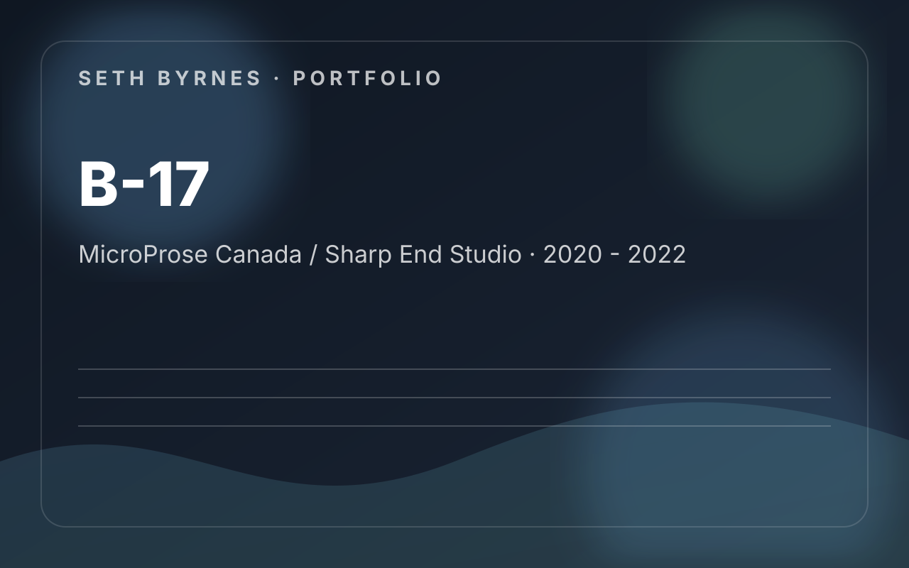

MicroProse Canada / Sharp End Studio · 2020 - 2022
B-17: Flying Fortress The Bloody 100th
Design and coordination work rooted in historical research: translating primary material, museum reference, and period objects into gameplay structure, narrative framing, and implementation guidance.

Contribution Areas
- Worked with Warplane Heritage Museum material and primary accounts as direct design reference.
- Documented mechanics, mission framing, and level or environment needs for the bomber fantasy.
- Wrote historically grounded narrative content and promotional material.
- Built airbase mockups and visual guides to align remote art production.
What I Owned
- Historical research and reference construction
- Gameplay and level documentation
- Narrative support
- Art coordination through visual aids
What This Work Demonstrates
- Strong example of design work grounded in research rather than abstraction.
- Connected authenticity to player readability and production needs.
- Bridged design, narrative, marketing, and art support.
Project Summary
Historical research, mission framing, narrative support, and cross-discipline coordination for a WWII bomber simulation.